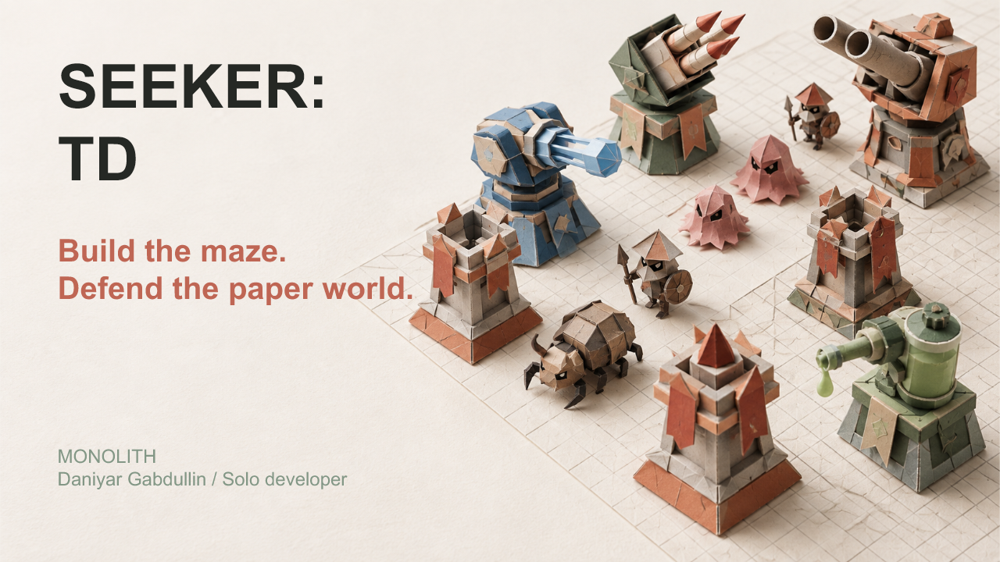
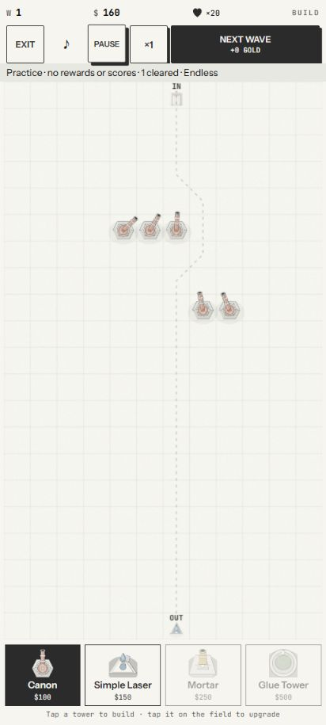
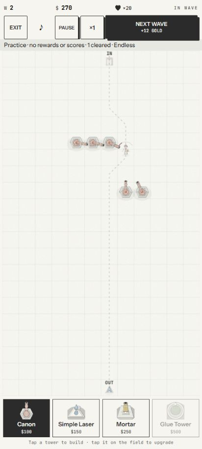

CLOCK IN / Solana Mobile Hackathon
SEEKER:
TD
Build the maze.
Defend the paper world.
Mobile-first tower defense for Seeker.

Adjacent alternatives / Seeker attention
Different games.
Our bet: shape the route.
| Game | Core loop | Web3 role | Our focus |
|---|---|---|---|
| Slimecoin | Mobile mini-games | USDC weekly score pool | Our maze decisions |
| Mattle.fun | Survival | Activity-driven character boosts | Our paper world |
| Billiards Clash | Competitive billiards / bot | Specific mechanics not established | Our wallet-free practice |
| SEEKER: TD | Maze tower defense | Devnet SOL / test-SKR checkout source | Routes + paper + practice |
Adjacent games, not direct tower-defense competitors. “Our focus” describes our own features, not features others lack. Demand hypothesis, not measured PMF.
The interaction
Placement becomes
pathfinding.
Balance a longer route
against useful firing positions.
Paper-world identity. Damage + control combinations.
Product demo
A board
you can play.
- Place and upgrade towers
- Combine damage and control
- Start the next wave


The play loop
Practice first.
Experiment with the maze.
Learn
Unlimited wallet-free practice.
Explore
Endless, timed, wave-target modes.
Adapt
Routes, upgrades, tower combinations.
Practice grants no STD or scores. Ranked results are local, not verified for prizes.
Proof, with boundaries
Gameplay preview exists.
Payment proof is pending.
Source + debug APK
Earlier Seeker gameplay recording
Seeker Wallet account selected
Read-only test SOL balance loaded
Ownership proof / signing
Real SOL/SKR checkout
Retention or revenue
Account selection/connect completed on Seeker Android 16 after human approval.
Ownership signing/payments not verified; SKR unconfigured. Video: Needs accepted host.
Why now / Seeker
Build for mobile.
Validate the wallet layer.
CLOCK IN is a focused
mobile-building opportunity.
Gameplay stays local.
Solana adds optional wallet commerce.
SKR prize is optional.
Devnet checkout source implemented.
Economy / devnet source
Pay for play.
Keep STD inside the game.
Monthly top-5 SKR rewards: planned only.
10% of run purchases; STD packs excluded. SOL conversion not implemented.
Founder
Daniyar
Gabdullin.
Solo founder & engineer.
Founder-provided background.
No funding or traction claim.
Next / validation before launch
Try the maze.
Help test the next build.
Gameplay pilot
Observe route comprehension.
Commerce validation
Device signing.
Receipt → grant once.
Release gates
Security review.
Store preparation.
Prototype, not a store listing. Final submission remains under founder control.